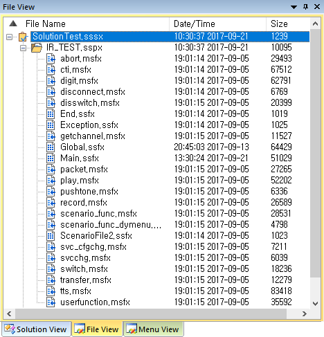
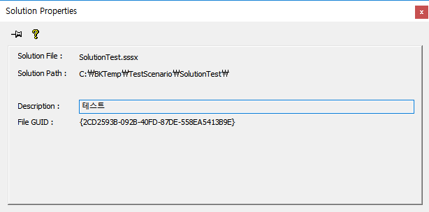
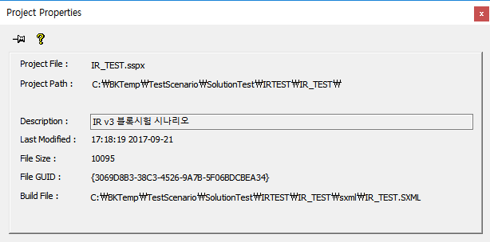
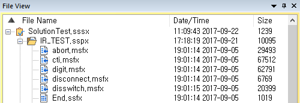
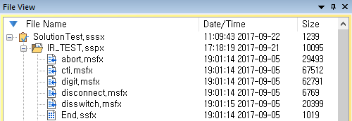

| File Pane(View) | 시작 다음 이전 |
프로젝트가 오픈되면 프로젝트에 포함된 시나리오 파일을 트리로 표시 하며, 파일의 확장자를 포함하여 표시 합니다.

File Name : 솔루션, 프로젝트, 시나리오 파일을 표시 합니다. Date/Time : 시나리오 파일의 최종 수정 날자와 시간을 표시 합니다. Size : 시나리오 파일의 사이즈를 표시 합니다.
* 형상관리 상태일 때는 Solution View 처럼 항목의 이미지가 변경 됩니다.
기본 사항
· 트리의 파일을 더블클릭하면 편집 화면에 시나리오가 열립니다.
솔루션 트리(루트 트리)
트리의 루트에서 마우스 오른 버튼을 누르면 메뉴가 팝업 됩니다. Properties를 제외한 나머지는 SolutionPane의 솔루션 트리의 내용과 동일 합니다.
· Properties... : 솔루션 파일의 속성
 : 버튼을 누르면 창이 자동으로 닫히는 것을 방지 합니다.
프로젝트 트리
트리의 루트에서 마우스 오른 버튼을 누르면 메뉴가 팝업 됩니다. Properties를 제외한 나머지는 SolutionPane의 프로젝트 트리의 내용과 동일 합니다.
· Properties... : 프로젝트 파일의 속성
 : 버튼을 누르면 창이 자동으로 닫히는 것을 방지 합니다.
파일 트리(시나리오 파일)
트리의 파일에서 마우스 오른 버튼을 누르면 메뉴가 팝업 됩니다. Properties를 제외한 나머지는 SolutionPane의 파일 트리의 내용과 동일 합니다.
· Properties... : 프로젝트 파일의 속성
: 버튼을 누르면 창이 자동으로 닫히는 것을 방지 합니다.
폴더 트리
트리의 폴더에서 마우스 오른 버튼을 누르면 메뉴가 팝업 됩니다. SolutionPane의 폴더 트리의 내용과 동일 합니다.
트리 정렬
트리 리스트의 컬럼 헤더를(File Name 컬럼) 마우스 왼 클릭을 하면 오름 차순 내림차순 정렬이 토글 되면서 정렬 됩니다.


|
| Copyrights(C) Bridgetec.co.kr. All Rights Reserved | 시작 다음 이전 |